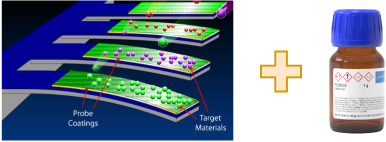
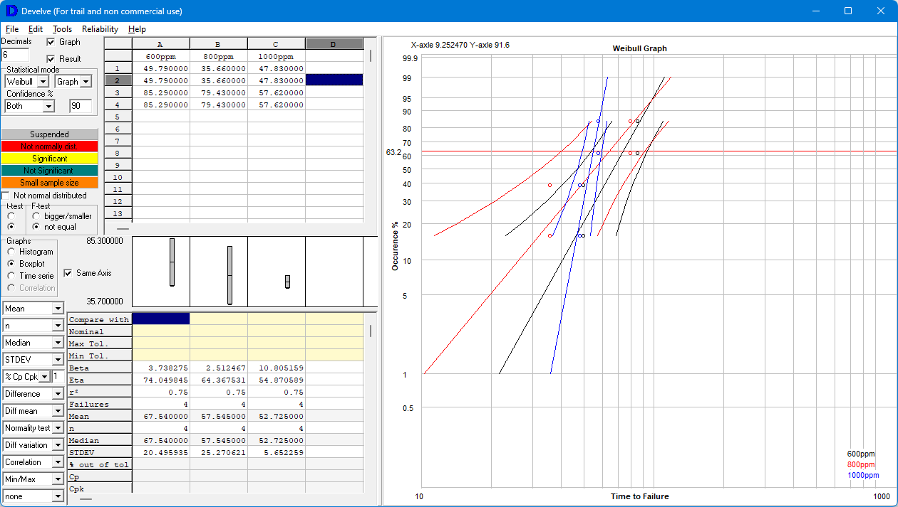
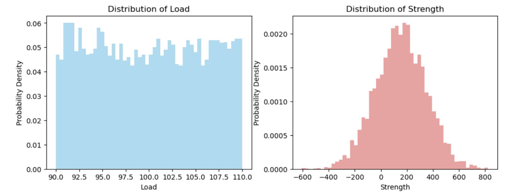
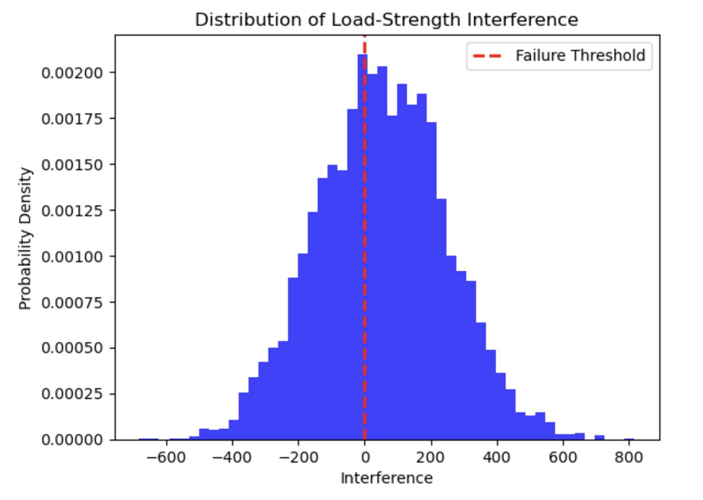

Cadaverine Cantilever
Reliability of Electronics - Autumn Semester 2023
SDU Sønderborg
Joel von Rotz
Introduction

- Metal centered complex of Cyclam in Methanol
- Meat and fish freshness evaluation using a biosensor
Measurement Setup

Results
Data Preparation
- Time until \Delta f=50\text{Hz} using Inter- & Extrapolation
\Downarrow
| Cumulative percentage | 600ppm | 800ppm | 1000ppm |
|---|---|---|---|
| r_1=29.17\% | 49.79\text{ min} | 35.66\text{ min} | 47.83\text{ min} |
| r_2=70.83\% | 85.29\text{ min} | 79.43\text{ min} | {57.62\text{ min}}\textcolor{red}{*} |
\textcolor{red}{*} Extrapolated
Weibull Plot

Weibull Values
| Concentration | 600ppm | 800ppm | 1000ppm |
|---|---|---|---|
| \beta | 3.74 | 2.51 | 10.81 |
| \eta | 74.05\text{ min} | 64.37\text{ min} | 54.87\text{ min} |
\Downarrow
T=A\cdot e^{-\alpha\cdot V}\quad\rightarrow\quad \eta=A\cdot e^{-\alpha\cdot V}
Lifetime: 100ppm
T(C)=112.733\cdot e^{-700.464\cdot 10^{-6}\cdot C}
T(100ppm)=\underline{105.11\text{ min}}
Reliability: 100ppm after 100h
R_{Field}(t)=\underbrace{\exp\left(-\left(\frac{t}{T}\right)^\beta\right)}_{\beta \text{ unknown}} = R_{Test}\left(\frac{t}{AF}\right)
AF = \frac{L_{Field}}{L_{Test}}=\frac{T(100ppm)}{T(600ppm)}=\frac{105.11}{74.05}\approx1.42
R_{100ppm}(100\text{h})=R_{600ppm}\left(\frac{100\cdot 60\text{ min}}{AF}\right)= \underline{0\%}
Warranty Calculation
R = 0.95 = {\exp\left(-\left(\frac{t}{\eta_{600ppm}\cdot AF}\right)^{\beta_{600ppm}}\right)}
\Downarrow
t=\eta\cdot AF\cdot\left(-\ln(0.95)\right)^{\frac1{\beta}} \approx \underline{47.51} \text{ minutes of operation}
Monte Carlo
import numpy as np
# [Parameters]
x = 100
num_simulations = 5000
a = 0.9 * x # uniform distribution
b = 1.1 * x
mu = x + 0.5 * x # normal distribution
sigma = mu + 0.3 * mu
# [Simulation]
load = np.random.uniform(a,b,num_simulations);
strength = np.random.normal(a,b,num_simulations);
interference = strength - load
failure_prob = np.sum(interference < 0) / num_simulations;Load & Strength

Interference

F=\frac{\#(\text{interference} < 0)}{N}\approx 38.76\%